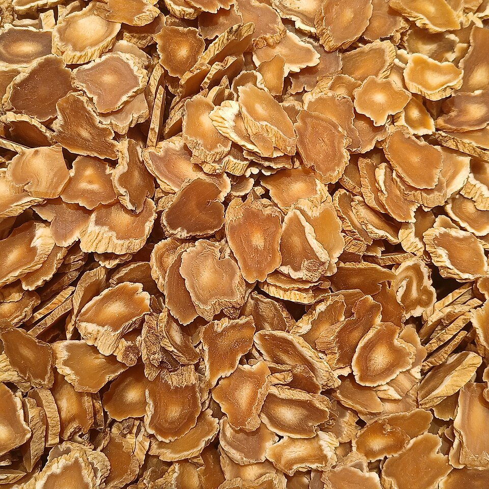

Rénshēn · Ginseng (Asian)人参
Ginseng Radix et Rhizoma · Supplementing herbs: qi tonicsGinseng Radix et Rhizoma · 补虚药·补气药

,_fruiting_plants_with_red_berry_clusters_in_a_forest_(SaatPilot).jpg){kind=link}


- Flavour · nature性味
- sweet, slightly bitter; slightly warm甘、微苦，微温
- Channels归经
- Spleen, Lung, Heart, Kidney脾、肺、心、肾经
- Direction升降浮沉
- Sweet, warm and supplementing, mainly ascending: it greatly supplements source qi to stop collapse, supplementing lung qi above and spleen qi in the middle甘温补益，升浮为主，大补元气以固脱，上补肺气、中补脾气
- Toxicity毒性
- Non-toxic无毒
- Dose (pharmacopoeia)用量（药典）
- 3–9 g (ceiling 9 g)（上限 9 克）
Decocted separately and added to the strained decoction; or powdered and swallowed, 2 g twice a day另煎兑服；也可研粉吞服，一次 2 克，一日 2 次 - Pregnancy孕期
- Caution in pregnancy孕妇慎用 No pregnancy restriction in the pharmacopoeia, but NCCIH says some studies suggest it may be unsafe by mouth in pregnancy, that one of its chemicals has caused birth defects in animals, and that little is known about breastfeeding. This site treats it as caution: do not take it on your own in pregnancy.药典未列孕期禁忌；美国国家补充与整合健康中心写明：有研究提示孕期口服可能不安全，其中一种成分在动物中可致出生缺陷；哺乳期安全性所知很少。本站按慎用，孕期不要自行服用。
- Health Canada加拿大卫生部
- Health Canada status: still to be verified加拿大卫生部状态：待核验 The NHPID monograph for Panax ginseng is still to be verified.加拿大天然保健品数据库的人参（Panax ginseng）专论待核验。
- Conservation资源与保护
- Wild ginseng is on China's list of nationally protected wild plants (grade to be verified); the Russian population of Panax ginseng is on CITES Appendix II (American ginseng, same genus, is Appendix II too). Medicinal supply is cultivated, and this page covers cultivated ginseng only; wild ginseng use is not discussed here.野生人参在中国列入国家重点保护野生植物名录（级别待核）；俄罗斯种群的人参列入《濒危野生动植物种国际贸易公约》附录 II（同属的西洋参也在附录 II）。药用为栽培品，本页只讲栽培人参；野山参不在本站讨论用法之列。
- Source来源
- Panax ginseng C. A. Mey.. Dried root and rhizome of Panax ginseng, ivy family; field-cultivated ginseng is 'garden ginseng', and seed sown to grow wild under forest is 'forest ginseng'Panax ginseng C. A. Mey.。五加科植物人参的干燥根和根茎；栽培的叫园参，播种在山林野生状态下生长的叫林下山参（籽海）
Traditional actions and indications功效与主治（传统）
🏛 Traditional statements, not efficacy claims; the modern evidence is graded further down.以下为传统说法，不是疗效主张；现代证据见下文分级。
- Greatly supplements source qi大补元气
- Restores the pulse and stems collapse复脉固脱
- Supplements the spleen and boosts the lungs补脾益肺
- Engenders fluids and nourishes blood生津养血
- Calms the spirit and sharpens the mind安神益智
Collapse from severe deficiency with cold limbs and a faint pulse; poor appetite from spleen deficiency; wheezing and cough from lung deficiency; thirst from fluid damage and wasting-thirst; deficient qi and blood; emaciation after long illness; palpitations and insomnia; impotence and a cold womb.体虚欲脱、肢冷脉微；脾虚食少；肺虚喘咳；津伤口渴、内热消渴；气血亏虚；久病虚羸；惊悸失眠；阳痿宫冷。
How to recognise it怎么认
Growing植株 A perennial 30–60 cm tall; three to six palmate leaves, each of five leaflets, whorled at the top of the stem; small yellow-green umbels in summer and a cluster of bright red berries in autumn. The root is fleshy, a spindle-shaped taproot often branched like a human figure.多年生草本，高 30–60 厘米；掌状复叶 3–6 片轮生于茎顶，每片 5 小叶；夏季开淡黄绿色小花成伞形，秋季结一簇鲜红色浆果。根肉质，主根纺锤形，常有分枝似人形。
Decoction pieces饮片 Sun-dried slices: round or oval thin slices with greyish-yellow skin; the cut face pale yellowish-white and starchy, with a brownish cambium ring, yellow-brown resin-canal dots and radiating clefts in the bark. Distinctive aroma; slightly bitter and sweet. Red ginseng slices are red-brown, translucent and horn-like.生晒参片：类圆形或椭圆形薄片，外皮灰黄色；切面淡黄白色，显粉性，形成层环纹棕黄色，皮部有黄棕色的点状树脂道及放射状裂隙。气香特异，味微苦、甘。红参片红棕色、半透明、角质样。
Processing炮制
- Sun-dried (white) ginseng生晒参：: More neutral; supplements qi and engenders fluids性较平和，偏于补气生津
- Red ginseng红参：: Steamed; warmer, for warm supplementation and rescuing collapse蒸制后性偏温，偏于温补、回阳固脱
Cautions and incompatibilities使用注意与配伍禁忌
Avoid in excess or heat patterns without underlying deficiency; not with Li Lu or Wu Ling Zhi (the eighteen incompatibilities and nineteen antagonisms); avoid strong tea or coffee in quantity while taking it; caution with large doses in high blood pressure or insomnia.实证、热证而正气不虚者忌用；不宜与藜芦、五灵脂同用（十八反、十九畏）；服用期间不宜同时大量喝浓茶、咖啡；高血压、失眠者慎用大剂量。
- Li Lu clashes with ginseng藜芦反人参 eighteen incompatibilities十八反
- Ginseng is antagonised by Wu Ling Zhi人参畏五灵脂 nineteen antagonisms十九畏
Interactions with medicines与西药的相互作用
- E2 Warfarin华法林：: One randomised trial in healthy volunteers found American ginseng lowered warfarin's effect (INR); evidence for Asian ginseng is mixed, so monitor INR if they are combined.一项在健康志愿者中做的随机对照试验显示西洋参使华法林作用（INR）下降；人参（亚洲参）对华法林的影响证据不一致，合用时要监测 INR。
- E3 Diabetes medicines and insulin降糖药与胰岛素：: Ginseng may lower blood sugar, adding to diabetes drugs with a risk of hypoglycaemia.人参可能降低血糖，与降糖药叠加有低血糖风险。
- E5 MAO inhibitors (such as phenelzine)单胺氧化酶抑制剂（如苯乙肼）：: Case reports from the 1980s describe an interaction with phenelzine; ask a doctor or pharmacist before combining.有人参与苯乙肼合用后出现相互作用的个案报告（1980 年代），合用前要问医生或药师。
Modern research, graded现代研究（分级）
- E2 There are many trials of ginseng for fatigue, cognition and blood sugar, but many are small and short and the results disagree; NCCIH says larger multicentre studies longer than 3 months are needed, and for many uses there is not enough reliable information.人参用于改善疲劳、认知、血糖等的临床试验数量不少，但不少规模小、时间短，结论不一致；美国国家补充与整合健康中心认为还需要更大、超过 3 个月的多中心研究，对很多用途现有资料不足以下结论。
In the classics古籍原文
「人參味甘小寒。主補五臟，安精神，定魂魄，止驚悸，除邪氣，明目，開心益智」——神农本草经
Shennong Bencao Jing (Divine Farmer's Materia Medica)
The Shennong Bencao Jing ranks ginseng in its top grade but calls it 'slightly cold', unlike today's 'slightly warm'; writers have long debated why (changes in origin and processing are candidates). 'Opens the heart and boosts wisdom' is the source of the later 'calms the spirit and sharpens the mind'.《神农本草经》列人参为上品，说它「微寒」——与今天「微温」的口径不同，历代对此有讨论（产地、加工方式变化都可能是原因）。「开心益智」四字是后世「安神益智」的出处。
Where it is used: the web串联：它在哪些方里、连到哪里
Classical formulas (Shanghan, Jingui)经方（伤寒、金匮）
| Formula方 | Role角色 | Dose: original / today剂量：原书／今用 | Partners in the formula同方配伍 |
|---|---|---|---|
| White Tiger Decoction plus Ginseng白虎加人参汤 | Minister臣 | original text: see the Chinese original三两 | Shígāo (Gypsum)石膏 · Zhīmǔ (Anemarrhena rhizome)知母 · Jing Mi (non-glutinous rice)粳米 · Gāncǎo (Licorice root)甘草 |
| Aconite Decoction附子汤 | Minister臣 | original text: see the Chinese original二两 | Fùzǐ (Aconite lateral root (processed))附子 · Bai Zhu (white atractylodes)白术 · Fúlíng (Poria)茯苓 · Báisháo (White peony root)白芍 |
| Cinnamon Twig and Ginseng Decoction桂枝人参汤 | Minister臣 | original text: see the Chinese original三两 | Guìzhī (Cassia twig)桂枝 · Gānjiāng (Dried ginger)干姜 · Bai Zhu (white atractylodes)白术 · Gāncǎo (Licorice root)甘草 |
| Regulate the Middle Pill理中丸 | Minister臣 | original text: see the Chinese original三两 | Gānjiāng (Dried ginger)干姜 · Bai Zhu (white atractylodes)白术 · Gāncǎo (Licorice root)甘草 |
| Honey-Fried Licorice Decoction炙甘草汤 | Minister臣 | original text: see the Chinese original二两 | Gāncǎo (Licorice root)甘草 · Sheng Di Huang (rehmannia root)生地黄 · E Jiao (ass-hide gelatin)阿胶 · Mai Dong (ophiopogon tuber)麦冬 · Huo Ma Ren (hemp seed)火麻仁 · Guìzhī (Cassia twig)桂枝 · Sheng Jiang (fresh ginger)生姜 · Da Zao (jujube)大枣 |
| Bamboo Leaf and Gypsum Decoction竹叶石膏汤 | Minister臣 | original text: see the Chinese original二两 | Zhúyè (lophatherum herb / bamboo leaf)竹叶 · Shígāo (Gypsum)石膏 · Bànxià (Pinellia tuber)半夏 · Màidōng (ophiopogon tuber)麦冬 · Gāncǎo (Licorice root)甘草 · Jīngmǐ (japonica rice)粳米 |
| Pinellia Heart-Draining Decoction半夏泻心汤 | Assistant佐 | original text: see the Chinese original三两 | Bànxià (Pinellia tuber)半夏 · Gānjiāng (Dried ginger)干姜 · Huángqín (Baikal skullcap root)黄芩 · Huang Lian (coptis rhizome)黄连 · Da Zao (jujube)大枣 · Gāncǎo (Licorice root)甘草 |
| Decocted Turtle Shell Pill鳖甲煎丸 | Assistant佐 | original text: see the Chinese original一分 | Bie Jia (soft-shelled turtle carapace)鳖甲 · She Gan (belamcanda rhizome)射干 · Huángqín (Baikal skullcap root)黄芩 · Cháihú (Bupleurum root)柴胡 · Shu Fu (woodlouse)鼠妇 · Gānjiāng (Dried ginger)干姜 · Dàhuáng (Rhubarb root and rhizome)大黄 · Báisháo (White peony root)白芍 · Guìzhī (Cassia twig)桂枝 · Ting Li Zi (pepperweed seed)葶苈子 · Shi Wei (pyrrosia leaf)石韦 · Hou Po (magnolia bark)厚朴 · Mǔdānpí (Moutan Bark)牡丹皮 · Qu Mai (dianthus herb)瞿麦 · Ling Xiao Hua (campsis flower)凌霄花 · Bànxià (Pinellia tuber)半夏 · Tu Bie Chong (ground beetle)土鳖虫 · E Jiao (ass-hide gelatin)阿胶 · Lu Feng Fang (wasp nest)露蜂房 · Chi Xiao (a form of saltpetre)赤硝 · Qiang Lang (dung beetle)蜣螂 · Tao Ren (peach kernel)桃仁 |
| Bupleurum and Cinnamon Twig Decoction柴胡桂枝汤 | Assistant佐 | original text: see the Chinese original一两半 | Cháihú (Bupleurum root)柴胡 · Guìzhī (Cassia twig)桂枝 · Huángqín (Baikal skullcap root)黄芩 · Báisháo (White peony root)白芍 · Bànxià (Pinellia tuber)半夏 · Sheng Jiang (fresh ginger)生姜 · Da Zao (jujube)大枣 · Gāncǎo (Licorice root)甘草 |
| Bupleurum plus Dragon Bone and Oyster Shell Decoction柴胡加龙骨牡蛎汤 | Assistant佐 | original text: see the Chinese original一两半 | Cháihú (Bupleurum root)柴胡 · Long Gu (fossil bone)龙骨 · Mu Li (oyster shell)牡蛎 · Huángqín (Baikal skullcap root)黄芩 · Bànxià (Pinellia tuber)半夏 · Sheng Jiang (fresh ginger)生姜 · Fúlíng (Poria)茯苓 · Guìzhī (Cassia twig)桂枝 · Dàhuáng (Rhubarb root and rhizome)大黄 · Qian Dan (red lead oxide)铅丹 · Da Zao (jujube)大枣 |
| Poria Frigid Extremities Decoction茯苓四逆汤 | Assistant佐 | original text: see the Chinese original一两 | Fúlíng (Poria)茯苓 · Fùzǐ (Aconite lateral root (processed))附子 · Gānjiāng (Dried ginger)干姜 · Gāncǎo (Licorice root)甘草 |
| Magnolia Bark, Fresh Ginger, Pinellia, Licorice and Ginseng Decoction厚朴生姜半夏甘草人参汤 | Assistant佐 | original text: see the Chinese original一两 | Hou Po (magnolia bark)厚朴 · Sheng Jiang (fresh ginger)生姜 · Bànxià (Pinellia tuber)半夏 · Gāncǎo (Licorice root)甘草 |
| Coptis Decoction黄连汤 | Assistant佐 | original text: see the Chinese original二两 | Huang Lian (coptis rhizome)黄连 · Gānjiāng (Dried ginger)干姜 · Guìzhī (Cassia twig)桂枝 · Bànxià (Pinellia tuber)半夏 · Da Zao (jujube)大枣 · Gāncǎo (Licorice root)甘草 |
| Fresh Ginger Heart-Draining Decoction生姜泻心汤 | Assistant佐 | original text: see the Chinese original三两 | Sheng Jiang (fresh ginger)生姜 · Bànxià (Pinellia tuber)半夏 · Huángqín (Baikal skullcap root)黄芩 · Huang Lian (coptis rhizome)黄连 · Gānjiāng (Dried ginger)干姜 · Da Zao (jujube)大枣 · Gāncǎo (Licorice root)甘草 |
| Mume Pill乌梅丸 | Assistant佐 | original text: see the Chinese original六两 | Wu Mei (smoked plum)乌梅 · Xìxīn (Asarum root and rhizome)细辛 · Gānjiāng (Dried ginger)干姜 · Huang Lian (coptis rhizome)黄连 · Fùzǐ (Aconite lateral root (processed))附子 · Dāngguī (Chinese Angelica Root)当归 · Shu Jiao (Sichuan pepper)蜀椒 · Guìzhī (Cassia twig)桂枝 · Huángbǎi (Phellodendron Bark)黄柏 |
| Minor Bupleurum Decoction小柴胡汤 | Assistant佐 | original text: see the Chinese original三两 9 g | Cháihú (Bupleurum root)柴胡 · Huángqín (Baikal skullcap root)黄芩 · Bànxià (Pinellia tuber)半夏 · Sheng Jiang (fresh ginger)生姜 · Da Zao (jujube)大枣 · Gāncǎo (Licorice root)甘草 |
| Inula and Haematite Decoction旋覆代赭汤 | Assistant佐 | original text: see the Chinese original二两 | Xuan Fu Hua (inula flower)旋覆花 · Dai Zhe Shi (haematite)代赭石 · Bànxià (Pinellia tuber)半夏 · Sheng Jiang (fresh ginger)生姜 · Da Zao (jujube)大枣 · Gāncǎo (Licorice root)甘草 |
| Hou's Black Powder侯氏黑散 | Envoy使 | original text: see the Chinese original三分 | Ju Hua (chrysanthemum flower)菊花 · Bái Zhú (white atractylodes rhizome)白朮 · Xìxīn (Asarum root and rhizome)细辛 · Fúlíng (Poria)茯苓 · Mǔ Lì (oyster shell)牡蠣 · Jié Gěng (platycodon root)桔梗 · Fángfēng (Saposhnikovia root)防风 · Fán Shí (alum)礬石 · Huángqín (Baikal skullcap root)黄芩 · Dāngguī (Chinese Angelica Root)当归 · Gānjiāng (Dried ginger)干姜 · Chuān Xiōng (sichuan lovage rhizome)芎藭 · Guìzhī (Cassia twig)桂枝 |
Later formulas (Song to Qing)时方（宋元明清）
| Formula方 | Role角色 | Dose: original / today剂量：原书／今用 | Partners in the formula同方配伍 |
|---|---|---|---|
| Ginseng Nourishing-Nutritive Decoction人参养荣汤 | Monarch君 | original text: see the Chinese original一钱 | Bai Zhu (white atractylodes rhizome)白术 · Huángqí (Astragalus root)黄芪 · Gāncǎo (Licorice root)甘草 · Chénpí (Dried tangerine peel)陈皮 · Rou Gui (cassia bark)肉桂 · Dāngguī (Chinese Angelica Root)当归 · Shúdìhuáng (Prepared rehmannia root)熟地黄 · Wu Wei Zi (schisandra fruit)五味子 · Báisháo (White peony root)白芍 · Fúlíng (Poria)茯苓 · Yuan Zhi (polygala root)远志 |
| Generate the Pulse Powder生脉散 | Monarch君 | original text: see the Chinese original原文此处未单独标注 | Mai Dong (ophiopogon tuber)麦冬 · Wu Wei Zi (schisandra fruit)五味子 |
| Ginseng, Poria, and Atractylodes Macrocephala Powder参苓白术散 | Monarch君 | original text: see the Chinese original原文未注（《局方》原方二斤） | Liánzǐròu (lotus seed)莲子肉 · Yìyǐrén (coix seed)薏苡仁 · Shārén (amomum fruit)砂仁 · Jiégěng (platycodon root)桔梗 · Báibiǎndòu (white hyacinth bean)白扁豆 · Fúlíng (Poria)茯苓 · Gāncǎo (Licorice root)甘草 · Báizhú (white atractylodes rhizome)白术 · Shānyào (Chinese yam)山药 |
| All-Inclusive Great Tonifying Decoction十全大补汤 | Monarch君 | original text: see the Chinese original原文未注 | Baizhu (white atractylodes rhizome)白术 · Fúlíng (Poria)茯苓 · Gāncǎo (Licorice root)甘草 · Shúdìhuáng (Prepared rehmannia root)熟地黄 · Dāngguī (Chinese Angelica Root)当归 · Báisháo (White peony root)白芍 · Chuanxiong (Sichuan lovage rhizome)川芎 · Huángqí (Astragalus root)黄芪 · Rougui (cinnamon bark)肉桂 |
| Four Gentlemen Decoction四君子汤 | Monarch君 | original text: see the Chinese original各等分（医方集解作二钱） 9 g | Bai Zhu (white atractylodes)白术 · Fúlíng (Poria)茯苓 · Gāncǎo (Licorice root)甘草 |
| Costusroot and Amomum Six Gentlemen Decoction香砂六君子汤 | Monarch君 | original text: see the Chinese original原文未注 | Baizhu (white atractylodes rhizome)白术 · Fúlíng (Poria)茯苓 · Gāncǎo (Licorice root)甘草 · Chénpí (Dried tangerine peel)陈皮 · Bànxià (Pinellia tuber)半夏 · Mùxiāng (Costus Root)木香 · Sharen (amomum fruit)砂仁 |
| Tonify the Middle and Augment the Qi Decoction补中益气汤 | Minister臣 | original text: see the Chinese original原文未注 | Huángqí (Astragalus root)黄芪 · White atractylodes rhizome (Bai Zhu)白术 · Gāncǎo (Licorice root)甘草 · Dāngguī (Chinese Angelica Root)当归 · Chénpí (Dried tangerine peel)陈皮 · Shēngmá (Cimicifuga rhizome)升麻 · Cháihú (Bupleurum root)柴胡 |
| Two-Cinnabar Pill二丹丸 | Minister臣 | original text: see the Chinese original五錢 | Dānshēn (Salvia root (Danshen))丹参 · Shúdìhuáng (Prepared rehmannia root)熟地黄 · Asparagus root天冬 · Ophiopogon root麦冬 · Poria with hostwood茯神 · Gāncǎo (Licorice root)甘草 · Cinnabar (mercuric sulfide)丹砂 · Acorus rhizome菖蒲 · Polygala root远志 |
| Turtle Shell and Deer Antler Two Immortals Glue龟鹿二仙胶 | Minister臣 | original text: see the Chinese original一斤 | Lu Jiao (deer antler)鹿角 · Gui Jia (tortoise plastron)龟甲 · Gou Qi Zi (wolfberry)枸杞子 |
| Restore the Spleen Decoction归脾汤 | Minister臣 | original text: see the Chinese original二钱 | Bai Zhu (white atractylodes rhizome)白术 · Fu Shen (poria with hostwood)茯神 · Suan Zao Ren (sour jujube seed)酸枣仁 · Long Yan Rou (longan aril)龙眼肉 · Huángqí (Astragalus root)黄芪 · Dāngguī (Chinese Angelica Root)当归 · Yuan Zhi (polygala root)远志 · Mùxiāng (Costus Root)木香 · Gāncǎo (Licorice root)甘草 |
| Celestial Emperor Heart-Supplementing Pill天王补心丹 | Minister臣 | original text: see the Chinese original原文未注 | Sheng Dihuang (raw rehmannia root)生地黄 · Xuan Shen (scrophularia root)玄参 · Dānshēn (Salvia root (Danshen))丹参 · Fúlíng (Poria)茯苓 · Jie Geng (platycodon root)桔梗 · Yuan Zhi (polygala root)远志 · Dāngguī (Chinese Angelica Root)当归 · Wu Wei Zi (schisandra fruit)五味子 · Tian Dong (asparagus tuber)天冬 · Mai Dong (ophiopogon tuber)麦冬 · Suan Zao Ren (spiny jujube seed)酸枣仁 · Bai Zi Ren (biota seed)柏子仁 |
| Ginseng Toxin-Expelling Powder败毒散（人参败毒散） | Assistant佐 | original text: see the Chinese original一兩 | Qiang Huo (Notopterygium root and rhizome)羌活 · Du Huo (Angelica pubescens root)独活 · Cháihú (Bupleurum root)柴胡 · Qian Hu (Peucedanum root)前胡 · Chuan Xiong (Sichuan lovage rhizome)川芎 · Zhi Ke (bitter orange fruit)枳壳 · Jie Geng (Platycodon root)桔梗 · Fúlíng (Poria)茯苓 · Gāncǎo (Licorice root)甘草 |
| Clear Dryness and Rescue the Lungs Decoction清燥救肺汤 | Assistant佐 | original text: see the Chinese original七分 | Sang Ye (mulberry leaf)桑叶 · Shígāo (Gypsum)石膏 · Mai Dong (ophiopogon tuber)麦冬 · Gāncǎo (Licorice root)甘草 · Kǔ Xìng Rén (Bitter Apricot Seed)苦杏仁 · Hei Zhi Ma (black sesame)黑芝麻 · E Jiao (ass-hide gelatin)阿胶 · Pi Pa Ye (loquat leaf)枇杷叶 |
| Mantis Egg-Case Powder桑螵蛸散 | Assistant佐 | original text: see the Chinese original原文此处未单独标注 | Sang Piao Xiao (mantis egg case)桑螵蛸 · Long Gu (fossil bone)龙骨 · Gui Jia (tortoise plastron)龟甲 · Fúlíng (Poria)茯苓 · Fu Shen (poria with pine root)茯神 · Yuan Zhi (polygala root)远志 · Shi Chang Pu (acorus rhizome)石菖蒲 · Dāngguī (Chinese Angelica Root)当归 |
| Evodia Decoction吴茱萸汤 | Assistant佐 | original text: see the Chinese original三两 | Wu Zhu Yu (evodia fruit)吴茱萸 · Sheng Jiang (fresh ginger)生姜 · Da Zao (jujube)大枣 |
Folk and single-herb remedies偏方、验方、单方
| Formula方 | Use用法 | Self-use能否自用 |
|---|---|---|
| Ginseng powder on bee and scorpion stings人参末敷蜂蝎螫伤 | External use外用 | Literature record only: not advised for self-use仅作文献记录，不建议自行使用 |
Patterns reached through these formulas经由这些方连到的证
- Exterior wind-cold-damp外感风寒湿（兼里热或气虚） ← Ginseng Toxin-Expelling Powder败毒散（人参败毒散）
- Lingering heat with damage to qi and fluids余热未清、气津两伤 ← White Tiger Decoction plus Ginseng白虎加人参汤, Bamboo Leaf and Gypsum Decoction竹叶石膏汤Points穴位 ST36 ZúsānlǐST36 足三里 · PC6 NèiguānPC6 内关 · SP6 SānyīnjiāoSP6 三阴交 · KI6 ZhàohǎiKI6 照海 · LU10 YújìLU10 鱼际Self-massage自我按摩 Ten minutes before bed: a self-massage routine for restless nights睡前十分钟：给睡不着的夜晚一套按摩 · Bloated after meals: belly rubbing and a few common points吃完总是胀：摩腹与几个常用穴Qigong功法 Baduanjin (Eight Pieces of Brocade)八段锦 · Liuzijue (Six Healing Sounds)六字诀
- Spleen deficiency with sinking qi脾虚气陷 ← Tonify the Middle and Augment the Qi Decoction补中益气汤Qigong功法 Baduanjin (Eight Pieces of Brocade)八段锦 · Yijinjing (Sinew-changing exercises)易筋经
- Lesser-yang pattern (half exterior, half interior)少阳证（邪在半表半里） ← Bupleurum and Cinnamon Twig Decoction柴胡桂枝汤, Minor Bupleurum Decoction小柴胡汤
- Taiyang wind strike (nutritive and defensive qi out of step)太阳中风（营卫不和） ← Bupleurum and Cinnamon Twig Decoction柴胡桂枝汤
- Heart yin and blood deficiency with an unsettled mind阴虚血少、心神不安（心肾阴亏） ← Two-Cinnabar Pill二丹丸, Celestial Emperor Heart-Supplementing Pill天王补心丹
- Lesser-yin cold transformation / yang collapse (severe)少阴寒化 / 阳衰（重症） ← Poria Frigid Extremities Decoction茯苓四逆汤, Aconite Decoction附子汤Symptoms症状 Fainting (first aid)晕厥（急救）
- Yang deficiency with water flooding / fluids rising阳虚水泛 / 中阳不足、水饮上逆 ← Poria Frigid Extremities Decoction茯苓四逆汤
- Heart-spleen deficiency心脾两虚 ← Restore the Spleen Decoction归脾汤Self-massage自我按摩 Ten minutes before bed: a self-massage routine for restless nights睡前十分钟：给睡不着的夜晚一套按摩Qigong功法 Liuzijue (Six Healing Sounds)六字诀
- Damp-heat diarrhoea with lingering exterior表证未解、湿热下利（协热利） ← Cinnamon Twig and Ginseng Decoction桂枝人参汤
- Spleen-stomach vacuity cold脾胃虚寒（中焦虚寒） ← Cinnamon Twig and Ginseng Decoction桂枝人参汤, Regulate the Middle Pill理中丸
- Wind-stroke with deficiency and cold中风（正虚、风邪夹寒） ← Hou's Black Powder侯氏黑散
- Dual deficiency of qi and blood气血两虚 ← Ginseng Nourishing-Nutritive Decoction人参养荣汤, All-Inclusive Great Tonifying Decoction十全大补汤
- Spleen deficiency with dampness脾虚夹湿 ← Ginseng, Poria, and Atractylodes Macrocephala Powder参苓白术散Qigong功法 Baduanjin (Eight Pieces of Brocade)八段锦 · Tai chi (simplified 24-form)太极拳（简化二十四式）
- Spleen-stomach qi deficiency脾胃气虚 ← Four Gentlemen Decoction四君子汤, Costusroot and Amomum Six Gentlemen Decoction香砂六君子汤
Exam notes (HER)考点（HER）
HER essentials: (1) the chief herb for source qi, in Du Shen Tang and Shen Fu Tang for collapse; (2) how it differs from Dang Shen, Xi Yang Shen and Tai Zi Shen; (3) Li Lu and Wu Ling Zhi; (4) decocted separately.HER 必考：①大补元气第一药，独参汤、参附汤救脱；②与党参、西洋参、太子参的区别；③十八反（藜芦）、十九畏（五灵脂）；④另煎兑服。
Sources依据
- Chinese Pharmacopoeia Commission. Pharmacopoeia of the People's Republic of China, 2020 edition, vol. I国家药典委员会《中华人民共和国药典》2020 年版一部
- Zhong Gansheng (ed.). Chinese Materia Medica (national TCM higher-education textbook series)钟赣生主编《中药学》（全国中医药行业高等教育规划教材）
- NCCIH. Asian Ginseng ↗
- Yuan CS, et al. Brief communication: American ginseng reduces warfarin's effect in healthy patients: a randomized, controlled trial. Ann Intern Med. 2004;141(1):23-27 ↗
- NCCIH. Herb-Drug Interactions: What the Science Says ↗
- Jones BD, Runikis AM. Interaction of ginseng with phenelzine. J Clin Psychopharmacol. 1987;7(3):201-202 ↗